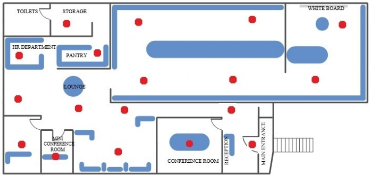

Step 2. Deploy the Infrastructure¶
In the second step of getting started with Navigine Indoor Location Services you prepare the target location for further measurement, which means you need to deploy the beacons (or Wi-Fi routers) in the target location.
iBeacon Approach (Bluetooth)¶
Prior to installing the beacons, make sure that the beacons are in iBeacon mode and the signal transmit power is set to`` -4dbm``.
For example, by default the Kontact.io beacons are set to travel mode
and have minimal transmit power for power saving purposes. In the beacon
transmit power options choose the 5th value, which corresponds to
-4dbm.
Also take into account the following golden rules during the beacon installation procedure:
- Use the beacons only in the areas where navigation is required.
- Install the beacons above the head level at the height between 2 and 4 meters. The best practice is to fasten beacons on the ceiling.
- In the case when the recommended beacon installation place is unavailable (for example, the ceiling is too high), you can attach the beacons to the walls.
- Use 1 beacon for the locations smaller than 25 square meters.
- Place the beacons evenly across the location, still do not put them on the same direct line.
- The more beacons you use, the higher the accuracy level is. Consider using 8-15 beacons per 1000 square meters.
- DO NOT put beacons behind metal objects and/or any other obstacles, otherwise the beacon’s usefulness will be tending to zero.
- Make sure the beacons are unaccessible so that they cannot be moved by unauthorized people.
The following figure demonstrates the optimal settlement of 18 beacons for a single facility with multiple rooms inside.

Wi-Fi Router Approach¶
<TBD> Here we provide detailed instructions for setting up the Wi-Fi infrastructure.
Once you have all infrastructure components deployed, go to Step 3. Create the Map.